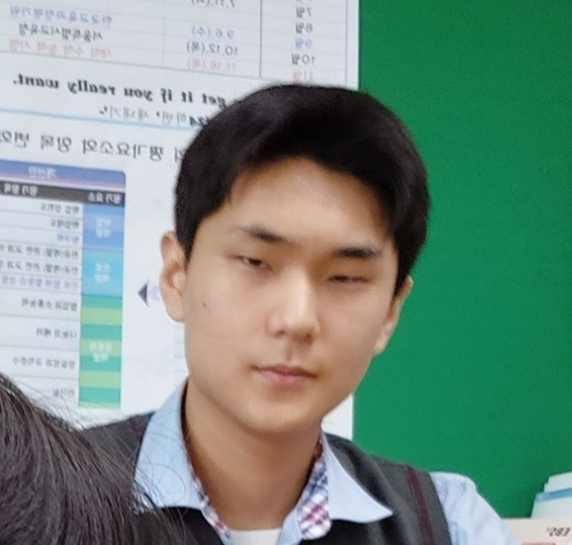

|
황경진 黄庆珍 | Hwang-Kyeong-Jin
|
|
|---|---|
|  | |
| 출생 | 2005년 12월 26일(19세) |
| 국적 | 대한민국 |
| 본관 | 누를 황씨 |
| 학력 | 봉하초등학교 (졸업) 두부중학교 (졸업) 문산제일고등학교 (졸업) 호서대학교 경찰행정학과 (재학) |
| 이명 | 경바오, 일간베스트 17렙, 절름발이, 씹프피 |
| 신체 | 176cm, 70kg(추정) |
3세대에 활동했던 인물로, 당시 일산의 왕이었던 인물이다. 일본에서 오토바이를 타며 야쿠자들과 패싸움을 벌이다 십자인대를 잃은 것을 이유로 현재는 싸움을 접고 호서대의 학사과정 중에 있다.
학생이면서도 대놓고 다미아니 십자가 목걸이와 크롬하츠 뿔테 안경, 롤렉스 시계, 발렌시아가 신발을 신고 있다. 하물며 술을 마시고 클럽에 나다니며 여자를 끼고 노는 등 전형적인 양아치의 모습을 보여주는 게 특징. 일산의 왕이었던 시절 버릇이 여전히 남아있어, 고등학교 시절에는 같은 반 친구를 무차별 폭행했을 뿐만 아니라 이후 주기적으로 해당 학생에게 힘을 과시하며 자존심을 눌러버린 일화도 있는 등 좋지 못한 행적을 보인다.
이유는 알 수 없으나 인터넷 방송인 김민교와 완전히 동일한 얼굴을 지니고 있다. 단순히 닮았다 정도가 아니라 유전적으로 100% 동일한 얼굴 염색체라고 해도 무방할 정도로 두 사람의 얼굴은 매우 유사하다. 이로 인해 일각에서는 그가 김민교의 숨겨진 쌍둥이가 아닌지에 대한 추측이 존재하지만, 김민교와의 나이 갭과 그들의 출생 배경을 고려할 때 큰 신뢰를 얻지는 못하고 있다. 황경진은 2005년 생으로, 김민교는 그보다 몇 년 늦은 나이에 방송 활동을 시작했기 때문에 두 사람의 나이 차이로 인해 쌍둥이설은 쉽게 받아들여지지 않는다.
그러나 일부 네티즌들 사이에서는, 두 사람의 외모뿐만 아니라 특정한 신체적 특징이 너무 비슷하다는 점을 지적하며, 그들이 실제로 어떤 방식으로든 유전적으로 연결되어 있을 가능성에 대해 이야기하고 있다. 예를 들어, 그들의 코 모양, 눈 주위의 주름, 심지어 웃을 때 입꼬리의 움직임까지 매우 흡사하다는 주장이 제기된다. 이들은 이러한 유사성이 단순한 우연이 아닐 수도 있다는 가능성에 무게를 두고 있다. 또한, 과거에 있었던 유전자 실험이나 미스터리한 형제 관계가 드러나지 않았을 가능성에 대한 이야기도 나온다. 일부 사람들은 과거 유전자 수정 기술이나, 이른바 '비공식적인 양육'을 통해 이들 사이의 유전적 연결을 추측하기도 한다.
또 다른 추측으로는, 두 사람이 매우 유사한 환경에서 자라났다는 주장이다. 예를 들어, 황경진과 김민교는 같은 동네에서 자라거나, 비슷한 사회적 배경과 직업적인 특성을 공유하고 있을 수도 있다는 것이다. 만약 두 사람이 어릴 때부터 함께 생활했거나, 어떤 형태로든 유사한 환경에 놓였을 경우, 그들의 얼굴이 비슷하게 형성될 수 있다는 주장이다. 이와 관련하여, 비슷한 사회적 환경에서 자란 사람들이 얼굴이 비슷해지는 '사회적 유사성' 이론도 있다. 이는 외모가 유전자뿐만 아니라 환경에 의해서도 영향을 받을 수 있다는 주장이다.
하지만 이런 추측들은 대부분 신빙성이 부족하다는 지적도 있다. 얼굴이 비슷한 이유는 결국 유전적인 요소에서 비롯된 것이며, 동일한 지역에서 자랐다 하더라도 얼굴이 그렇게 유사할 가능성은 낮다는 주장이다. 또한, 황경진과 김민교의 부모나 가까운 친척들의 모습이 전혀 다르다는 점에서 그들 사이의 유전적 관계를 확인하기 어려운 상황이다.
결국 명백히 확인된 사실은 없다. 그러나 확실한 것은 김민교조차 황경진이 누구인지 인지하고 있을 정도로 말도 안되게 닮았다는 사실이다.
겉으로는 친절해 보이지만 사실 굉장히 악랄한 성격을 가졌다.
항상 모두에게 잘해줄 것 같지만 작은 흠집이라도 있으면 내칠 명분을 찾은 후 철저하게 파괴하고 유린하는데, 일례로 고등학교 3학년 시절 같은 반이었던 전 모 씨는 황경진과 친해지려 순수한 마음으로 노력하였으나 전 모 씨의 생김새가 마음에 들지 않았던 황경진이 몰래 화장실로 데려가 재미없는 장난을 친다는 것을 명분으로 무차별적으로 폭행 후 변기통에 머리를 박는 치욕을 주어 철저하게 밟아버렸다는 기록이 존재한다. 현재 전 씨는 대인기피증 및 선택적 함구증을 후유증으로 앓게 되었다.
그럼에도 불구하고 전혀 미안해하지 않는 것이 그의 싸패 포인트. 자존심 때문에 사과를 하지 않는 것이 아니다. 진심으로 미안함 혹은 죄책감을 느끼지 못한다. 전문가들은 소시오패스로 추측하고 있으나, 일산의 왕이던 시절 이정도 일은 별 것도 아닌 일이었기에 악행에 무던해진게 아닐까 하는 추측도 존재한다.
그러나 그의 이러한 성격은 같은 남자들에게만 적용된다. 만약 상대가 여자일 경우 얼굴에 상당한 하자가 있지 않는 이상 대부분의 흠을 허용해준다. 히스테릭한 성격과 심각한 결핍이 있는 여자조차 언제든 아내로 맞아들일 준비가 되어있는 밝히는 성격이다.
그의 호전적인 성격은 모두 일산의 왕이던 시절의 버릇을 버리지 못한 것에서 기인하는 것으로 보이며, 최근 대학생이 되고 나서는 잠잠하지만 대부분의 악인이 그렇듯 그저 이해관계 때문에 본성을 숨기고 사는 것으로 보인다.
전반적인 가치관은 이상주의 및 감성. 위에서 설명한 행적과는 대비되는 모순적인 가치관임을 알 수 있는데, 어처구니 없는 것은 정치적 신념은 심지어 우파라는 것이다. 가지고 있는 요소들이 전혀 매칭되지 않는 기이한 인격체임을 알 수 있는데 이는 소시오패스라는 추측에 힘을 더한다. 사회에 대한 학습은 할지언정 이해가 불가하기에 남들이 갖고 있는 성격을 하나하나 모방하다가 뒤죽박죽이 되었다는 설이다.
황경진의 전투력은 전 씨 와의 일기토만 보아도 알 수 있다.
일단 자비가 없다. 그 어떤 동정심도 느끼지 않는 무감정의 생물이기에, 자신보다 훨씬 작은 체구의 전 씨와의 싸움에서 먼저 리버샷부터 선빵으로 날리며 싸움을 시작하는 모습에서 그 무자비함을 알 수 있다..
전 씨 역시 반격을 했다고는 하지만 황경진의 화만 돋군 전현준은 일격에 후두부에 치명상을 입고 행동기능을 상실했다. 화장실에 처박힌 전 씨는 황경진에게 무차별 폭행당했으며 끝끝내 무릎을 꿇고 말았다.
황경진이 정말 잔인한것이, 여기서 끝나는 것이 아니라 끝까지 굴욕을 준다는 점이다. 황경진은 전투불능에 빠진 전 씨 에게 "야 이 씨발 애미창녀야. 노숙자가 먹다 토한 니애미 비둘기보지 절삭하기전에 잘못했는지 안했는지 니입으로 말해라"라고 말하고, 말 없는 전 씨에게 집요하게 압박을 가한 결과 끝끝내 비참한 반성을 받아내게된다.
이는 단순히 악랄한 것이 아니라 꽤나 전략적인 기술이다. 상대에게 재기조차 불가능하도록 확실한 위계관계를 각인시키는 것은 황경진의 전매특허 스킬이다.
일산의 왕 시절은 말할 것도 없다. 그의 휘황찬란한 복싱만으로 과거 비공식 세계대통령 자리를 얻어냈다는 CIA기록이 발설된 적 있다. CIA는 조작된 내용이라고 일축했지만, 과거 오바마 대통령이 황경진에게 머리를 숙이는 장면도 포착되는 등 그가 복싱만으로 국제 정재계를 뒤흔든 사실이 단순히 음모론만으로 치부되지는 않고 있다.
분명 감정이 없다는 점에서 굉장히 강력하지만 남자에게만 한정된다는 치명적인 약점이 존재한다. 사실 여자로만 한정할 경우 황경진의 전투력은 기하급수적으로 떨어지는데, 아마 전 씨가 여자였다면 뻗어있는 것은 아마 황경진이었을 것으로 보인다.
여자친구가 어떤 기행을 벌여도 너그러이 용서해주는데, 주변 사람들이 빨리 헤어지라고 조언해도 "하~ 잘못된 건 알지만~ 어쩌겠냐~" 같이 결론적으로는 용서, 또 용서를 하는 자비로움을 보인다. 고민을 들어주던 친구들은 말 그대로 미칠 지경.
이러한 씹스러움은 이상과 감성을 추구한다는 그의 씹프피적 가치관과 어우러져 최근에는 푸바오와 황경진을 합친 '경바오'라는 이명을 만들어내기까지 하였다.
자세한 내용은 황경진/생애 문서를 참고하십시오.
{kind=link}